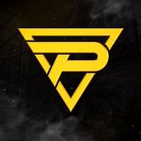

Formado en noviembre de 2015 por MK. Como un pequeño equipo de amigos
Pulse fue el primer clan conocido de Freestyle en Rocket League
Pulse fue el primer clan conocido de estilo libre en Rocket League
y al frente de esto estaba un nuevo equipo llamado Nixus
para saber mas sobre la historia ve a la imagen
